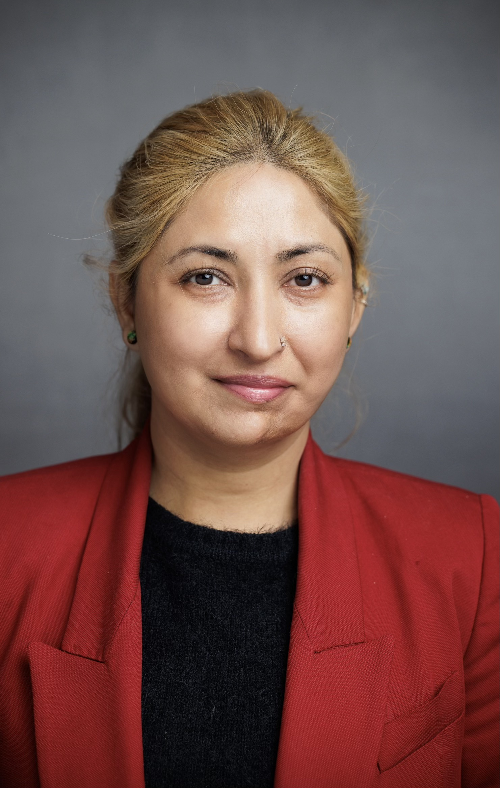
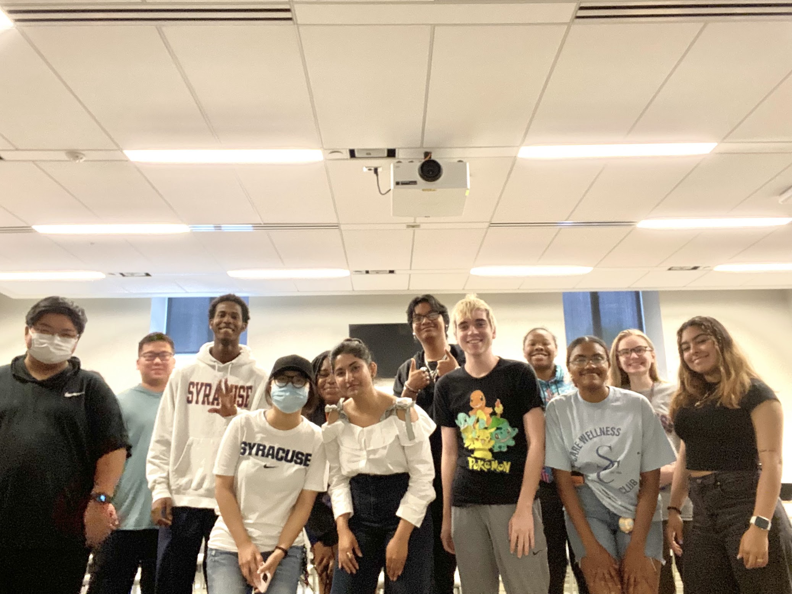
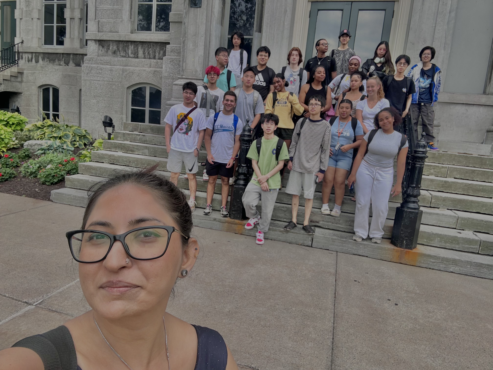
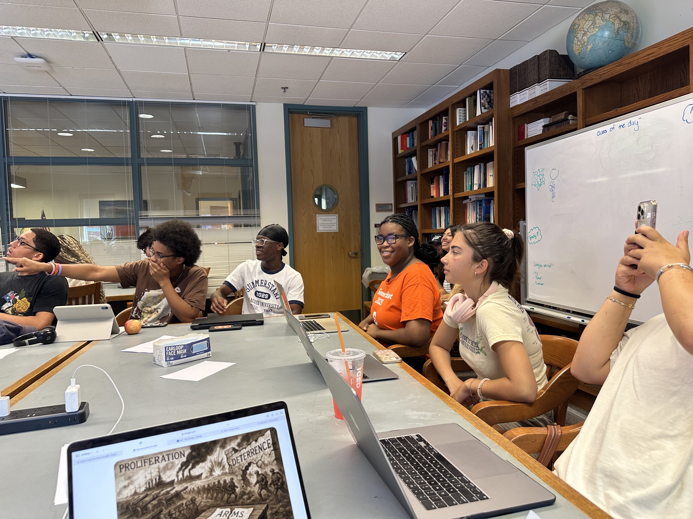
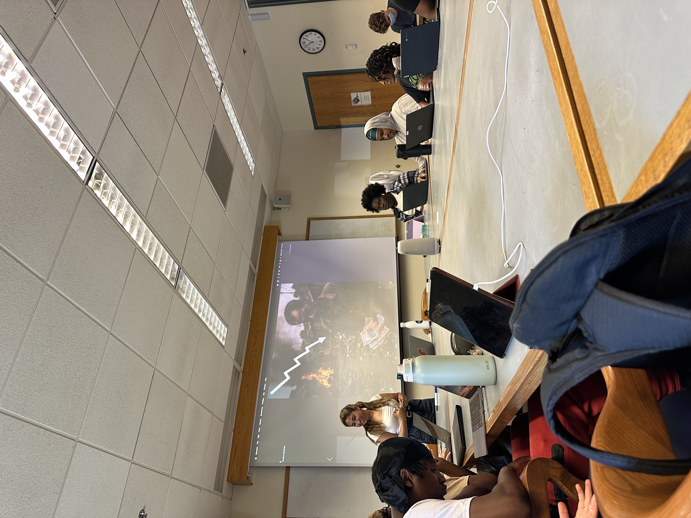

I'm Sobia Paracha, a political scientist using computational methods and large language models to study how elites construct and contest nationalism in territorial disputes and issues of sovereignty.
▶ Ph.D. Candidate · Defending August 2026

I was born and raised in Quetta, Pakistan, and worked as a policy analyst for the first ten years of my career. My research interests emerge from my personal experiences of growing up under intermittent conflict and the stark difference between the center and periphery in service provision and state presence.
I am a Ph.D. candidate in Political Science at Syracuse University specializing in international relations, comparative politics, and quantitative methods. My dissertation, Entrenched or Abandoned: Nationalism and Political Contestation in Territorial Disputes, uses computational text analysis to study how political elites in postcolonial states construct, deploy, and sometimes abandon nationalist discourse around disputed territories.
Beyond my research, I am a committed educator and mentor. Navigating the academy while managing a chronic autoimmune condition has shaped my pedagogical identity, leading me to prioritize technical equity and transparent instruction for all students. My mission is to transform the classroom into a site of empowerment by making the mechanics of academic success accessible to a diverse student body.
Territorial Disputes, Nationalism, Economy & Politics of Borders, computational social science, Foreign Policy & Domestic Politics, Nuclear & Strategic Dynamics in South Asia
Brian Taylor (Chair), Ryan Griffiths, Erin Hern, Naushin Husain
English, Urdu, Punjabi, Siraiki, Hindi, Farsi (beginner)
A longitudinal computational analysis of Pakistani press discourse on Kashmir. Uses fine-tuned DeBERTa models for text classification and NLP methods on a large-scale corpus of press articles.
Examines elite discursive strategies toward Pakistan's peripheral territories, specifically how security framing silences political claims from borderland populations.
A comparative study of how postcolonial states construct national identity through territorial claims and border contestation.
Automated content analysis (supervised & unsupervised), topic modeling, sentiment analysis, and LLM fine-tuning for social science research at scale.
Full data pipelines from corpus construction through analysis and visualization.
Causal inference for observational data, TSCS / panel analysis, multi-level modeling, and discrete choice models.
Archival research in Pakistan, text extraction from non-digital sources, large-scale corpus construction, and digital humanities workflows.
Download my full CV for a complete overview of my research, teaching, and professional experience.
Download CV (PDF)



I'm open to research collaborations, postdoctoral opportunities, and conversations about computational approaches to political science.